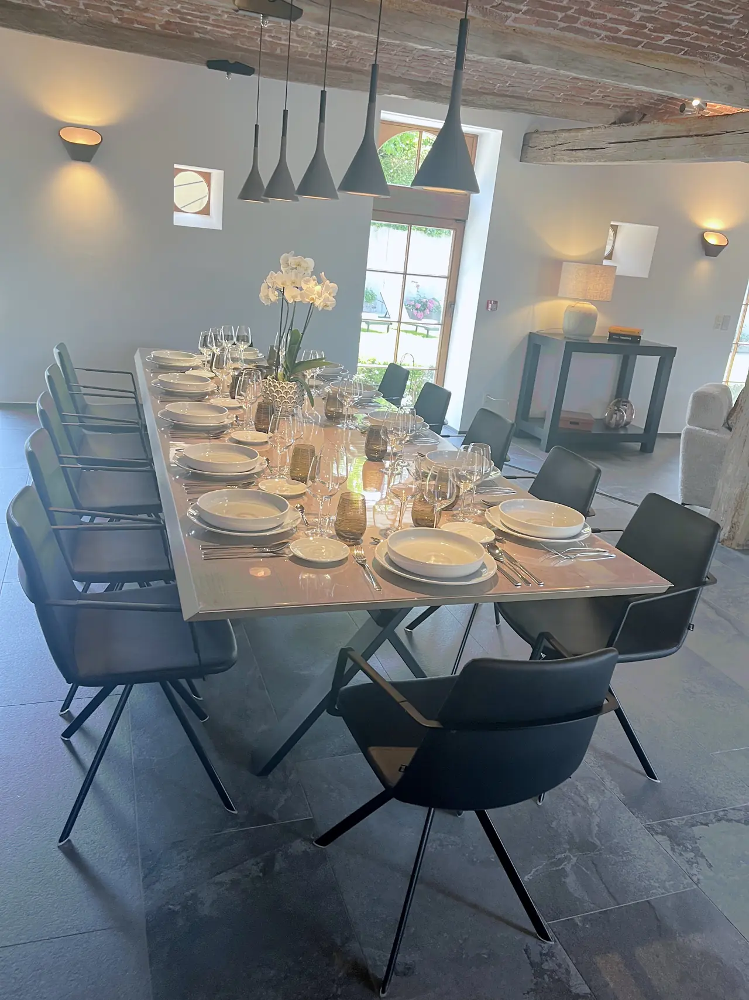
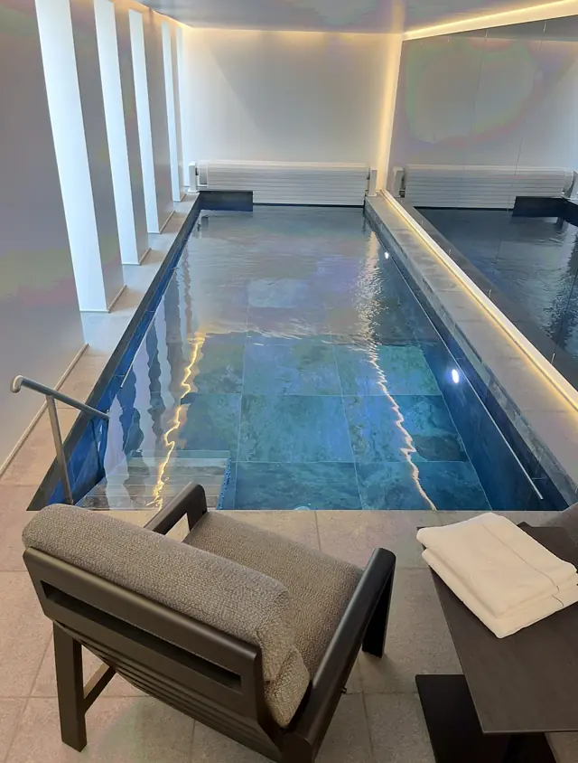
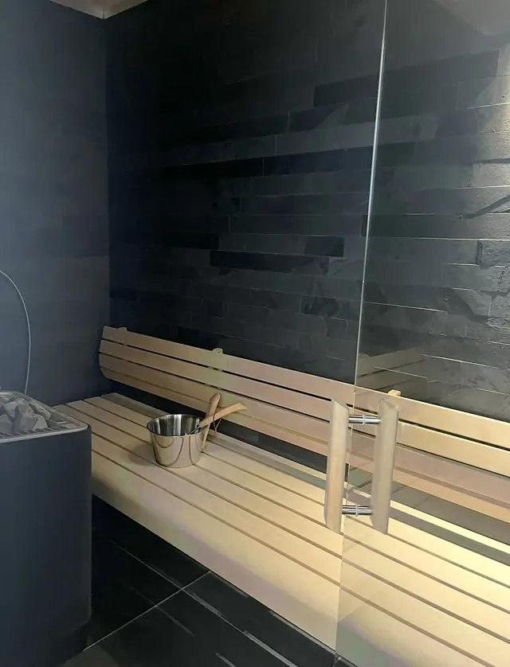
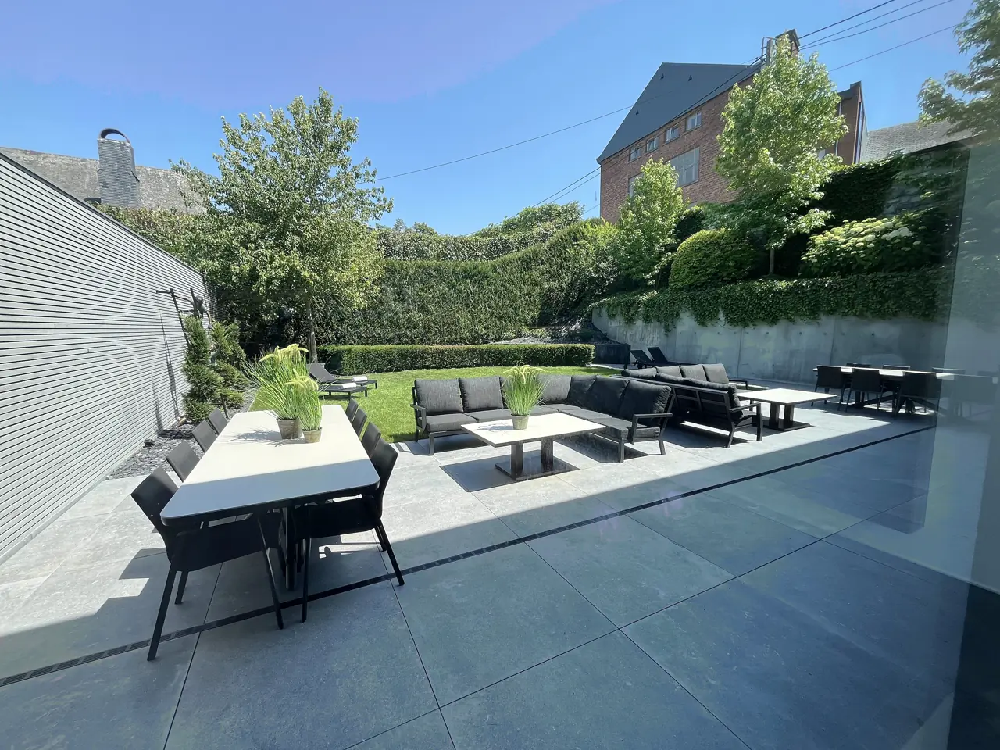
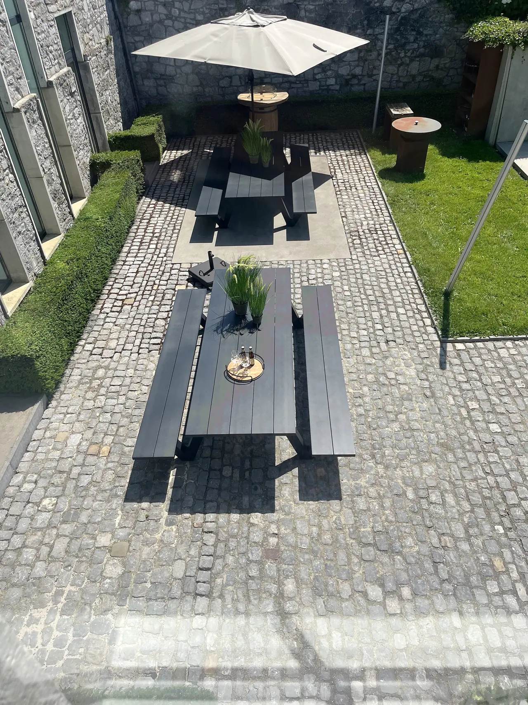

Prendre le temps.
Ce que l'on vit au Rempart tient en peu de choses : une grande table, un feu, l'eau chaude, la cour au soleil, et une région à explorer.

La table
Dans le gîte 1, la table accueille douze convives sous les voûtains de brique. La cuisine en îlot, le four vapeur et la machine à café à grains sont là pour les cuisiniers de la famille.
Gîte 1L'eau et la chaleur
Une piscine intérieure à la lumière tamisée, un sauna de bois clair : un espace bien-être réservé aux hôtes du gîte 1, à toute heure du séjour.
Gîte 1


Une cheminée dans chaque maison, pour les longues soirées.

La cour
Le cœur de la ferme en carré : des pavés anciens, une pelouse, des haies de buis, des tables de bois et des parasols. Les enfants y jouent à l'abri des murs, les adultes y prennent l'apéritif au soleil du soir.
Se retrouver à vingt-huit
Réunissez les trois maisons : chacun garde son espace pour dormir et se reposer, et tout le monde se retrouve dans la cour. Une formule pensée pour les réunions de famille et les anniversaires.
Demander le domaine entierPartir à la découverte
Châteaux de la Meuse, kayak sur la Lesse, grottes de Han, abbayes et grandes tables : nous avons rassemblé nos adresses dans un rayon de cinquante kilomètres.
Le guide de la régionUn guide dans votre téléphone
Avant votre arrivée, vous recevez le lien de votre guide de séjour : accès, Wi-Fi, vidéos pour chaque équipement, adresses du quotidien. Sam, qui vous accueille, reste joignable sur WhatsApp pendant tout le séjour.
Votre séjour commence par une date.
Dites-nous quand vous venez et combien vous serez. Nous vous répondons personnellement.
Demander un séjour